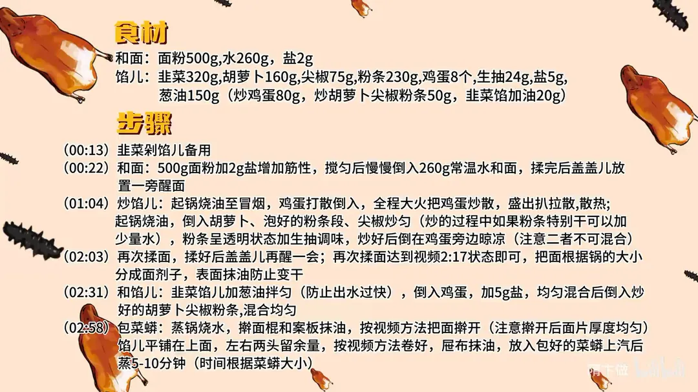

菜蟒
隋卞一做。河南面食：500g 面粉加 2g 盐、260g 常温水揉成软面，醒透后擀成均匀薄片，韭菜、胡萝卜、尖椒、粉条、鸡蛋拌馅卷成蟒状，上汽蒸 5–10 分钟。
原视频：https://www.bilibili.com/video/BV1Ab421p7N8
食材
面粉、韭菜 等 11 样
| 类别 | 用料 | 用量 |
|---|---|---|
| 和面 | 面粉 | 500g |
| 和面 | 水 | 260g |
| 和面 | 盐 | 2g |
| 馅儿 | 韭菜 | 320g |
| 馅儿 | 胡萝卜 | 160g |
| 馅儿 | 尖椒 | 75g |
| 馅儿 | 粉条 | 230g |
| 馅儿 | 鸡蛋 | 8 个 |
| 馅儿 | 生抽 | 24g |
| 馅儿 | 盐 | 5g |
| 馅儿 | 葱油 | 150g（炒鸡蛋 80g、炒胡萝卜尖椒粉条 50g、韭菜馅加油 20g） |
步骤
- 剁馅：韭菜剁成馅儿备用。
- 和面：500g 面粉加 2g 盐增加筋性，搅匀后慢慢倒入 260g 常温水，边倒边和，揉完后盖盖儿放一旁醒面。
- 炒馅儿：起锅烧油至冒烟，鸡蛋打散倒入，全程大火把鸡蛋炒散，盛出扒拉散、散热；另起锅烧油，倒入胡萝卜、泡好的粉条段、尖椒炒匀（炒的过程中如果粉条特别干可以加少量水），粉条呈透明状态时加生抽调味，炒好后倒在鸡蛋旁边晾凉，注意二者不可混合。
- 再揉面：面醒好后再次揉面，揉好盖盖儿再醒一会；把面根据锅的大小分成面剂子，表面抹油防止变干。
- 和馅儿：韭菜馅儿加 20g 葱油拌匀，防止出水过快；倒入 80g 炒鸡蛋，加 5g 盐，均匀混合后倒入炒好的胡萝卜、尖椒、粉条（连同 50g 葱油），混合均匀。
- 包菜蟒：蒸锅烧水，擀面棍和案板抹油，把面擀开，注意擀开后面片厚度均匀；馅儿平铺在上面，左右两头留余量，按视频手法卷好；屉布抹油，放入包好的菜蟒，上汽后蒸 5–10 分钟，时间根据菜蟒大小调整。
小贴士
- 和面加的 2g 盐只用来增筋性，不是为了调味。
- 韭菜先拌葱油再拌其余馅料，油脂裹住菜叶，蒸的时候才不出水。
- 炒好的鸡蛋和炒配菜必须分开晾凉、分开拌入，混在一起容易捂出腥气。
讲解要点
难度：★★☆☆☆（难点是面片擀得薄而均匀、卷紧不破）
为什么这么做
- 面里加 2g 盐：盐让面筋网络更紧实，擀成薄片不容易破，卷馅时也不裂。
- 面和得硬一点，醒到「三光」：面团硬一点水分少，擀薄才不粘；揉到切面没有网孔，说明水分吸匀、面筋松弛，才擀得开、不回缩。
- 鸡蛋要用冒烟的高油温炒：高温让蛋液瞬间膨起、出泡，蛋香才足、口感才蓬松；温油下锅的鸡蛋发硬。
- 鸡蛋和配菜分开晾凉：两样热着混在一起会捂出水汽、闷出腥气，分开摊开散热才对。
- 粉条和胡萝卜、尖椒同炒：粉条把蔬菜的水汽和香味吸进去，馅就不至于出水；粉条变透明就说明软透了。
- 韭菜先拌葱油再加盐：油在菜叶表面封一层膜，盐杀出来的水就被挡住，馅不出汤、蒸完不塌。
- 面片厚薄要一致：边上厚的地方蒸不熟，薄的地方一蒸就破；案板、擀面棍抹油才擀得开。
容易翻车
- 面没醒透就擀，面片回缩、卷的时候破皮漏馅。
- 韭菜先加盐后拌油，馅出水，蒸完底下一汪汤。
- 鸡蛋、粉条热着就拌在一起，捂出腥气。
- 面片边角没擀薄，蒸出来一块夹生。
- 时间不按个头给，块头大照 5 分钟出锅，中间不熟。
热评补充
- 有观众觉得这种不加酵母的冷水面团蒸出来皮不透亮，建议改用半烫面，皮更软更透；喜欢带点厚实口感就按原做法。
原片尾卡

原片文案
AI 字幕校准稿
从河南回来之后啊，小李就疯了，非得缠着我，让我给他做那个菜，菜蟒。这个菜呢也真的非常适合教给大家。来吧，今儿个这个菜蟒就按照我的理解做了。
我们先把韭菜切一下。来和面，一斤面里面加 2 克盐，会使这个面的筋性更好一点。把盐搅匀，夏天用常温水和就可以了，冬天使温水，它醒得快。水慢慢倒，和得稍微的硬一点。看这样就行了——横截面掰开之后，里面还有那个干面，还没醒透，就要揉完之后放它一会，就揉到手光、面光、盆光。弄完之后加上盖，搁旁边醒着。
再然后呢，我们把这个馅儿炒一下。把鸡蛋打散，锅烧热，加油烧到冒烟，然后把鸡蛋倒进去。油温高了，它的鸡蛋才会蓬起来；油温到了，倒进去之后呼哒就起一泡，你炒出的鸡蛋才香。拿勺子给它怼散。鸡蛋炒完之后呢，给它扒拉散，让它把这热气透一透。
放点葱油，胡萝卜搁进去，粉条泡好之后切成段，也搁油里一块炒，这就是关小火。然后把这尖椒搁进去，粉条就会把尖椒和胡萝卜的水汽吸进去，香味也吸进去了。你看这粉条已经成了透明状态了，就证明已经软了。我们做一个简单的调味，来点生抽，定一下味儿。关火，把炒好的粉条倒在鸡蛋旁边，两个先别倒一块，要分开都给它晾凉。
下一步呢，把面揉一下。你看中间的还是那种有点网孔的状态，证明里边的粉还没有把水分吸均匀、没有吸足，所以揉完之后再醒一会儿。面醒到表面光滑、横切面里边的网孔很少了，证明已经醒透了。就手揉的话，揉这样就差不多了。中间截一刀，做成剂子搓圆，搓完之后抹点油防止它干，盖上盖。
我们和馅，在拌盐之前，韭菜这先来两勺油，它出水就没有那么快了，因为它表面和了一层油膜。这平时做包子、包饺子、拌韭菜馅都可以这么干。然后把鸡蛋放进去，这时候往里面加盐，把粉条倒进去。
擀面棍上面给来点油，案板上也要抹点油，要不然擀不开。你看案板上抹完油之后，你一擀这个面，它是随着擀面棍会扩大，四边大概就去一下，一定要把边儿擀到，千万不能留很厚的地方，要蒸完了不一块熟。大小差不多了，来，里边装馅，平铺，盖上，这是第一层，两头也要留点位置，卷。屉布上抹点油，直接放到屉里边，中间留点缝。
水开了，咱们把这个笼屉扣盖，上面再盖一盖，它隔水上汽之后蒸 10 分钟应该就可以了。好了，到时间了。
让你复刻，没让你超越。葱油的加入非常非常的重要，里面下的那种复合味和层次全部都集起来了。你也能吃到胡萝卜那一点点的甜，和青椒的清香和辣，所以说它里面的层次感是非常的鲜明，非常的复合，非常的香，超级好吃。咱们今天教的这种馅，包包子的话也特别特别的好吃。真的，这个馅你们回去试。爱吃肉的，你可以剁点肉末搁里边一包。